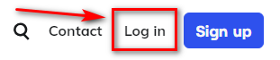
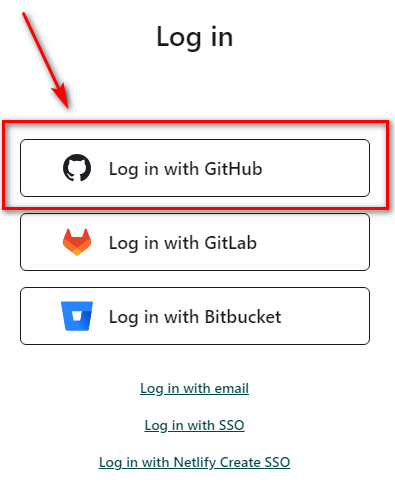
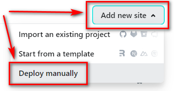
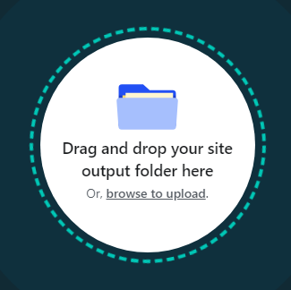
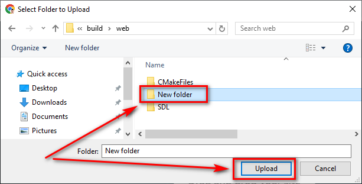
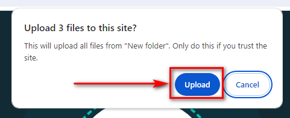
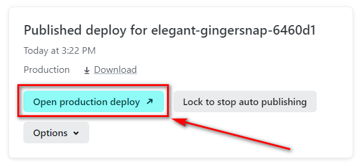
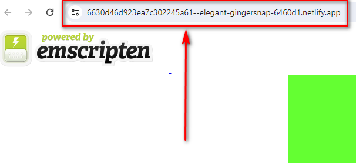
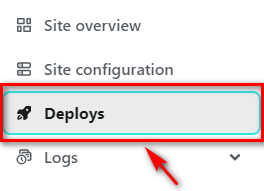
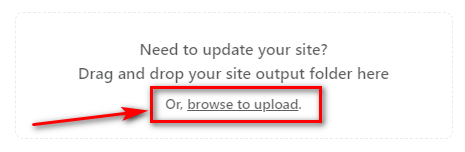

Distribute your builds on the free 'www.netlify.com' hosting
- Go to the free hosting and log in with GitHub (or just make a registration): https://www.netlify.com/


- It is possible to deploy from existing repository but we will deploy manually
- Selet on the right side: 'Add new site' > 'Deploy manually':

- Press 'browse to upload':

- Selecte a 'New folder' and press 'Upload':

- Press 'Upload' again:

- Press 'Open production deploy' to open your web application:

- Now you can copy a link to distribute it on forums/social networks/discord and so on:

- If you want to make this link shorter you can google 'shorten url'
- If you want to deploy again you can press 'Deploys' on the left side to refresh the page:

- And you can see 'browse to upload' when you scroll the page down:
